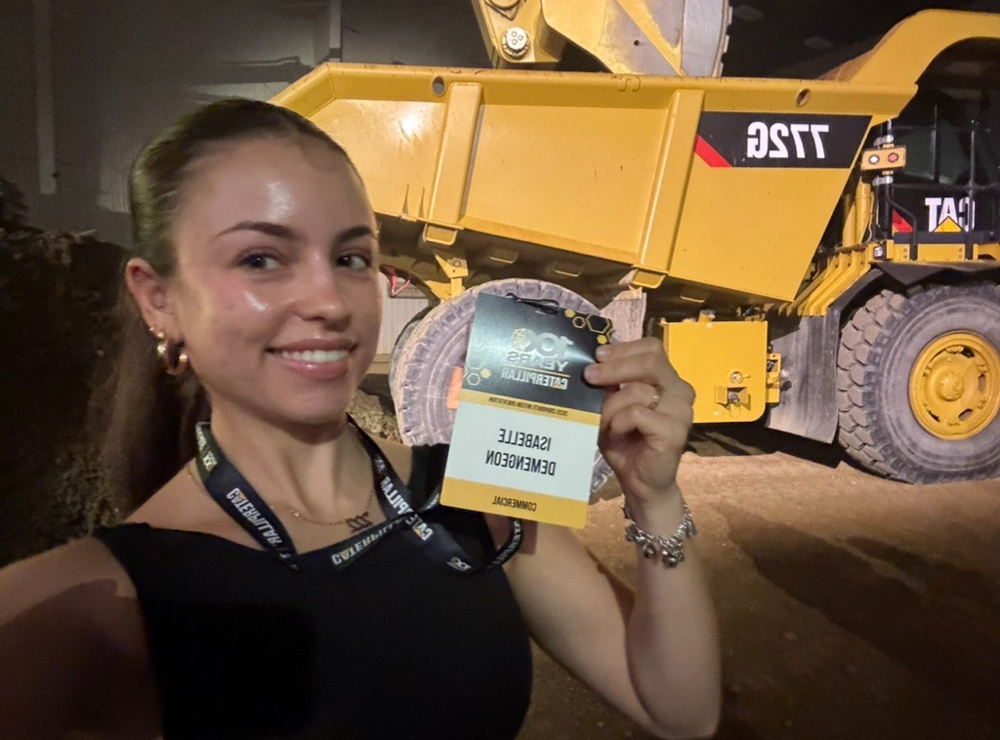
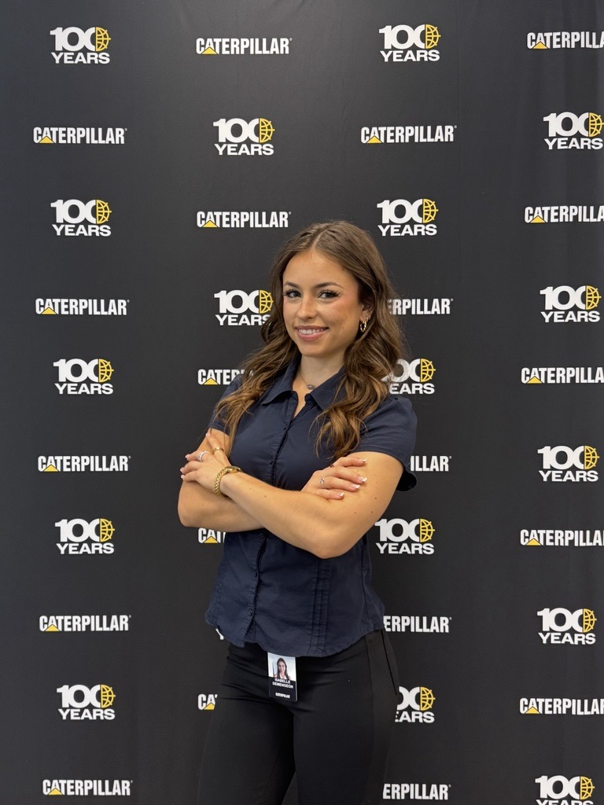
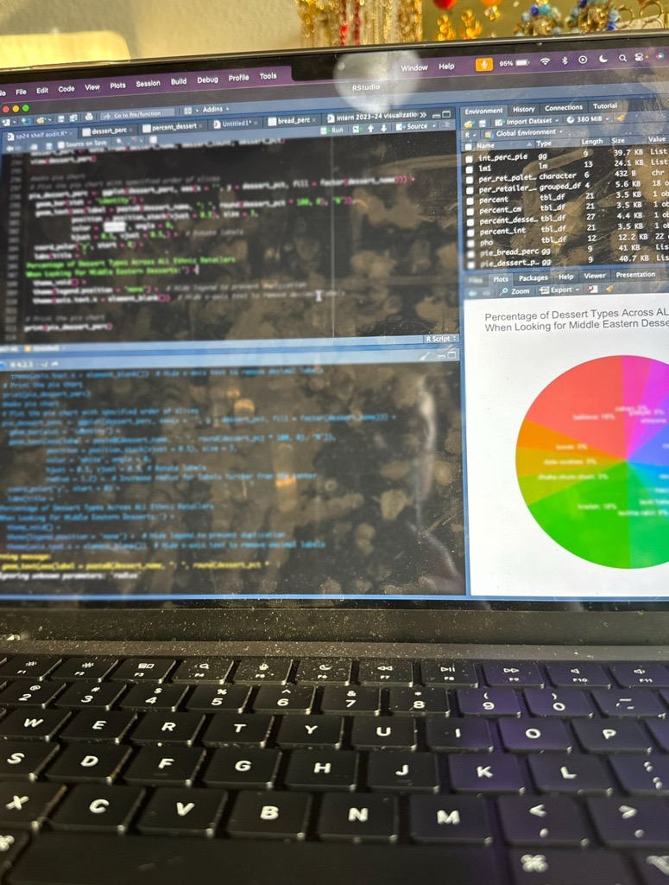
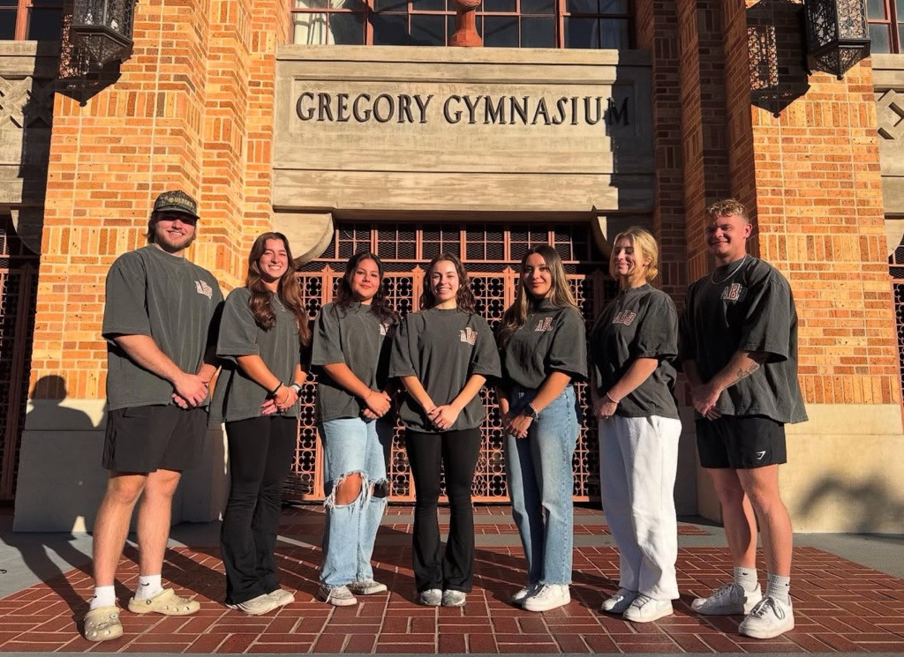
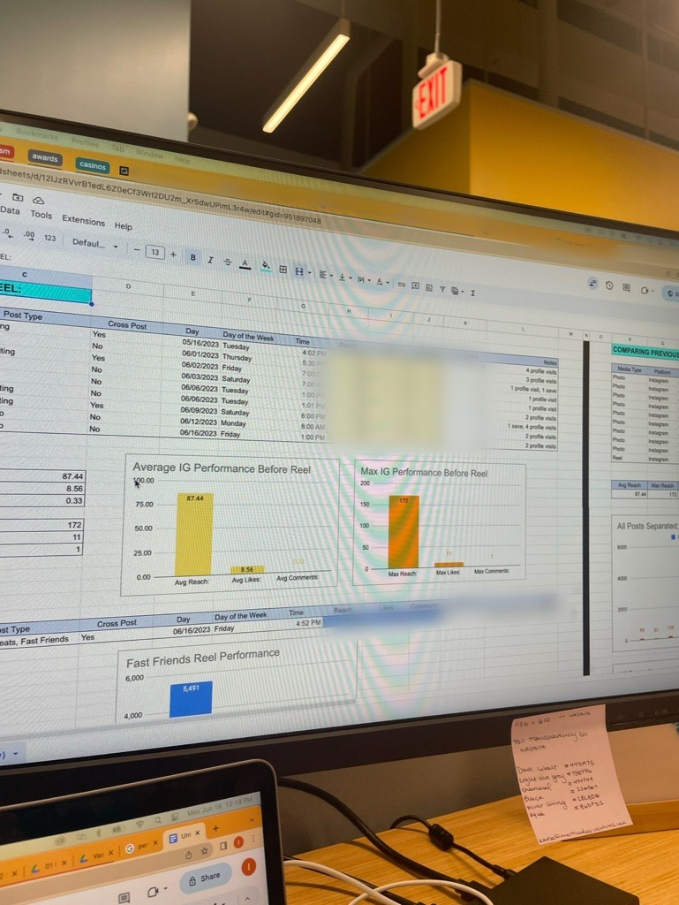

GPA: 3.71
Major: Business Analytics
Graduation: May 2026
Honors: Fall 2022, Spring 2023, Fall 2023, Spring 2024
Your Next CAT Employee
★ ☆ ★ ☆ ★ ☆ ★ ☆ ★ ☆ ★ ☆ ★ ☆ ★ ☆ ★

★ ☆ ★ ☆ ★ ☆ ★ ☆ ★ ☆ ★ ☆ ★ ☆ ★ ☆ ★
As a Business Analytics major at the McCombs School of Business, I have learned that I have the power to brand myself. This means that I have the ability to convey what I personally represent as a student, as a professional, and as an individual. I coded this website to share information about myself, outside of what you'd find on my resume.
My goal is to give you a clear depiction of my own personal brand and who I am as a person. I aim to show you that I possess the qualities necessary to exceed expectations transitioning from internships to a full-time role for you.
I am a curious learner who strives to bring the best work forward. With a track record of dedication and commitment in my previous internships and leadership positions, I bring a wealth of experience to the table.
Driven by a passion for excellence and fueled by a competitive spirit, I strive for nothing short of greatness in everything I do.
I firmly believe that success is the result of hard work and dedication, and I am unwavering in my commitment to giving my all,
whether it's achieving top grades in school or exceeding expectations in the workplace.
At the core of my personal brand lies a dedication to excellence and a relentless pursuit of growth. Just like managing multiple projects simultaneously, I thrive in dynamic environments where adaptability is key. These past few years, I have been engaged in a myriad of activities, each showcasing my ability to juggle responsibilities effectively.
I'm proud to be the President of Austin Bodybuilding (ABB). Being promoted from Vice President to this school year's President, I have the privilege of leading an exceptional team of officers. My role involves identifying and harnessing each team member's unique skills, expertise, and personalities to effectively collaborate and achieve our objectives. This experience has refined my skills in strategic communication and team management, showcasing my ability to thrive in collaborative environments.
Moreover, I've honed my analytical skills through coursework such as STA 235 - Data Science for Business Applications and my internship with Afia as a Market Research Intern, as well as my most recent experience with Caterpillar Inc. as a Business Operations Intern. These roles and experiences prepare me to tackle complex challenges head-on using data. This blend of academic rigor and practical experience equips me to excel in roles requiring strategic thinking, problem-solving, and using data to support strategy.
Upon completion of one of my projects here at CAT, I equipped my team with actionable insights. I'm making a difference by using data to drive business decisions. The value chain starts with me, travels to my team, impacts CAT, gives value to the dealers, which in turn delivers value to our customers. It starts with me.
1. Curiosity and Continuous Learning: I approach every opportunity as a chance to expand my knowledge and perspective. I'm never the smartest person in the room, and this perpective allows me to keep growing.
2. Drive and Determination: From overcoming setbacks to achieving recognition as a Top 10 International Winner, I embody resilience and perseverance in the face of adversity. I approach problems by leaving them better than I found them.
3. Community and Collaboration: Whether collaborating with officers in ABB to drive 23% growth in attendance, or fostering a sense of camaraderie in academic settings, I value the power of collaboration in driving meaningful change.
GPA: 3.71
Major: Business Analytics
Graduation: May 2026
Honors: Fall 2022, Spring 2023, Fall 2023, Spring 2024
2020 - EcowithBelle: Founder
2021 - Fate City Hall: Intern to the City Secretary
2021 - Home Team Insurance: Marketing Intern
2022 - The University of Texas at Austin: Dining Marketing Assistant & Photographer
2023 - Vaask: Marketing Intern; promoted to Social Media Coordinator
2023 - The University of Texas at Austin: TA for Operations Management 235
2024 - Afia: Market Research Intern
2024 - HEB: Service Partner
2025 - Caterpillar Inc.: Business Operations Intern
Organizations: Kendra Scott Women's Entrepreneurial Leadership Institute's General Member (2023),
Austin Bodybuilding's President (Present),
Hispanic Business Student Association (HBSA) Member (2024)
Hobbies: Bodybuilding, bouldering, running, volleyball, reading, dance
Interests: Philosophy (Carl Jung), cooking, coding, plants
CAT Intern (Done!)
↓CAT Analyst, Strategist, Coordinator (Or the like)
↓Analyst Specialist
↓Strategy Manager
↓☆ Strategy Director ☆
 


